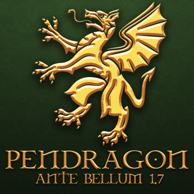

| 战争前夜 | |
|---|---|
|  | |
| LOGO | |
| 别名/游戏中名称 | Ante Bellum |
| 类型 | 架空历史 |
| 作者 | Parmelion |
| 版本 | 1.7 适用于欧陆风云 1.34.3版本 |
| 论坛/贴吧 | 901139920（群号） |
| STEAM创意工坊 | 1908400374 |
战争前夜是以欧洲、东亚和部分中东为中心的架空历史模组（1.8版本将更新波斯及中亚地区）。模组的主要思想是保留欧陆风云4原版的游戏性，而不是充斥着新机制，同时也通过添加新的国家、任务树、事件等提供全新的游戏体验。
模组简介
剧本介绍
1.0 战争前夜
在波希米亚胡斯教徒战败后，欧洲享受了许多年的内部和平与稳定。但是一切即将改变：最近神圣罗马帝国在瓦伦西亚战役中的惨败，直接结束了使得对安达卢西亚的伊比利亚十字军对安达卢西亚的征服中道崩殂，落荒而逃的军队留下法兰克皇帝与他唯一的儿子一同战死沙场。在这之后，皇位被已故皇帝那年迈、无后且为人所厌的叔叔洛泰尔匆忙占据，然而他还没有一个合法的继承人。如果洛泰尔死时还没有一个指定的继承者，他的去世将不仅意味着加洛林王朝的灭亡，还意味着神圣罗马帝国及其近邻内外的巨大动荡。
1.1 伟大征服
作为在战争的熔炉中锻造而成的战场英杰，尼扎尔大帝很久以前就驱逐了阿尤布王朝的统治者，迅捷征服了黎凡特和埃及的大部分地区。可惜的是时间证明，这位伟大的苏丹的后代根本不配继承他的名字，苏丹国已被他们拖到了通往毁灭的路上。在最近的一次愚行中，久负盛名的埃及军团曝尸荒野，而胜利者耶路撒冷王国则理所当然的进一步地夺取了西顿。为了避免重蹈覆辙，尼扎尔正被野心勃勃的新苏丹彻头彻尾地重塑，而这位新苏丹的唯一的野望就是根除整个近东地区的拉丁统治者。随着尼扎尔的再次复兴，窃窃私语诉说着十字军战士们对即将面对的狂风骤雨的恐惧。尼扎尔人正在迈向战争，在伟大的征服之后，圣地终将属于他们！
1.2 异教之怒
远在基督教世界之外，是野蛮不化的波罗的海地区，一片几乎未被神圣罗马帝国的定居者们触及的、琥珀和精魂的土地。除了畏惧的汉萨同盟商人们能带回如山一般的琥珀石和关于旧神怒火的故事外，几乎没有谁进入或是离开那里。但最近在汉萨同盟支持下的条顿骑士团入侵和瑞典单独发动的北方十字军正在缓慢却坚定地侵占异教徒们的圣地。两个世界间的冲突已然无法避免。异教诸神是否会响应信徒们的召唤？还是说整片区域都将跪倒在胜利的十字架之下？
1.3 鲁塞尼亚的继承者
自从基辅罗斯在强大的蒙古帝国的重压下分崩离析已经过去了两个世纪。从那时起，罗斯诸王国一直屈服于它们的异族主人的使役之下，但是这种情况可能不会再持续太久了。随着中亚诸汗国的完全崩溃，以及金帐汗国被孤立在不忠的朝贡国的簇拥之中，现在属于铁木真子嗣们的霸权正在迅速瓦解。当大汗的军阀们再也没有统治广大罗斯的能力，鞑靼枷锁日益松动之时，基辅罗斯的继承者们开始为了自由和统一而发动战争。究竟谁才能成为鲁塞尼亚的真正继承者？
1.4 帝国覆灭
法兰克皇帝和他唯一的儿子在瓦伦西亚的血腥战役中殒命早逝，导致了基督教世界的安达卢西亚十字军的失败。这场大败的余波席卷了西欧和中欧的大部分地区，天主教徒陷入了恐慌。为已故皇帝所厌的叔叔洛泰尔，现在身兼神圣罗马帝国皇帝和法兰克国王两个头衔——尽管这位年迈暴君的统治已经开始分崩离析；合法继承人的缺失很可能会演变成继承危机，这不仅会决定加洛林王朝的命运，也会决定整个欧洲的命运。在安达卢西亚，凯旋的哈里发在庄严的游行中回到了他的首都，现在，他那背信弃义的臣属们对哈里发的威胁甚至比基督徒还要大，因为一场内战已经逼近。骰子已经掷下。帝国们会面临什么样的结果?
1.5 巨龙王座
虽然红巾起义没能推翻蒙古侵略者，但是这次起义成功地暴露了元朝的弱点。随着黄河以南的土地都被起义军占领，孛儿只斤氏对天命的宣称比以往更加衰弱。即便是对政治局势最兴味索然的人也能意识得到，忽必烈汗穷尽一生所创建的这一帝国，可能顷刻间就会轰然倒塌。万岁爷的朝廷因恶性的政治僵局而瘫痪，甚至即将开始瓦解，元朝仍然蹒跚地走向命运的终点。从面露凶相的日本大名，到塔里木盆地狂野的商旅僧人，甚至中国政治内部，无人不关注着这一风暴前夜。毕竟，只有最强大的国家才有机会将最终宝物收入囊中：其为巨龙王座。
1.6 塞尔柱的遗产
随着拜占庭帝国的衰落，帝国边界逐渐缩小，来自东西方的威胁如潮水般袭来。世界渴望之城如今已处于瘫痪状态，腐败无能的安杰洛斯王朝调转船头冲向保加利亚骑兵，而尼西亚的军政府则试图推翻君士坦丁堡的罗马遗产。然而要复兴这遗产，必须战胜塞尔柱人和他们的贝伊国，尽管未来安纳托利亚及其周边的突厥化已成定局。塞尔柱也许陷入停滞，但他们最近在阿尤布王朝的要求下皈依了伊斯兰教，为星月力量再添一分。随着蒙古统治西方的最后残余势力已被孤立，伊利汗国和金帐汗国会寻求殊死一搏，即便他们可能会被自己压垮。近东陷入另一场危机：战争即将爆发。
1.7 潘德拉贡
作为壁立千仞的不列颠尼亚的昔日霸主，英格兰如今萎靡不堪，亨格斯特和霍萨的子孙们已经变得肠肥脑满，忘乎其形。英格兰人对眼前的麻烦视而不见，无视诸国国王对统一的绝望请求，他们或许很快就能见到脚下的领土被逐步蚕食的景象——无论他们是否相信这一切。从威尔士到康沃尔，苏格兰到爱尔兰，英格兰的老对手们现在都环顾窥伺，磨刀霍霍，渴望寻求最血腥的复仇。与此同时，在英吉利海峡对岸，诺曼人正耐心地计算着日子，等待着他们第三次，也是最后一次夺取宿敌的王位的那一天。战争前夜的钟声正在群岛敲响，人们虔诚祈祷，当他们最需要拯救的时候，那位存在于过去与未来的永恒之王终会降临：其名潘德拉贡！
特色
- 无需学习新机制！
- 新国家和可成立国家
- 新事件，事件链和决议
- 新理念组和政策
- 超过140个国家的全新或更新任务树
- 超过100个新省份
- 新荒地
- 新文化和文化组
- 新时代和时代能力
- 新剧本
- 新天朝改革和圣旨
- 新宗教
- 新伟大工程
- 新国家理念和理念强化
- 由Utopia创作的全新原声带
- 新科技
- 新顾问
- 新建筑
- 新修会
- 超过100个新政府改革
- 时间线延长至1900年
- 新加载页面
- 自定义成就
- 可航行的里海
- 殖民地更新
- 新雇佣兵团
- 更多动态省份名称
……以及更多！
可成立的国家
这是战争前夜中所有可成立的国家列表。其中包括一些原版游戏的国家，但在原版游戏中无法成立。
- 阿拔斯
- 阿尔比恩
- 阿尔勒
- 奥匈帝国
- 亚美尼亚帝国
- 波罗的海联盟
- 比利时
- 勃兰登堡
- 哈里发国
- 卡兰塔尼亚
- 天朝
- 加勒比
- 凯尔特联盟
- 中华
- 东法兰克
- 鄂温克
- 日高见国
- 法兰克帝国
- 弗里西亚
- 高卢
- 高句丽
- 哥特
- 大摩拉维亚
- 希腊化帝国
- 伊比利亚
- 伊利里亚
- 海间联邦
- 意大利亚
- 日本帝国
- 金
- 大韩
- 拉丁帝国
- 辽
- 中法兰克
- 北海帝国
- 海外
- 吐火罗
- 特里纳克里亚
- 图兰
- 联省尼德兰
- 联合公国
- 文德
- 西罗马
- 西夏
- 不列颠尼亚
特殊可成立国家
部分国家不能通过决议成立，只能通过少数特殊手段转换至该tag。部分可成立国家，有除了通过决议成立之外的特殊方式。还有部分国家，没有对应的成立决议，但可以通过特殊的事件由其它国家转换至该国家tag，且与成立国家有相同或相似的效果。
以下国家无法通过决议成立，只能使用特定的方式成立：
| 国家 | 成立方式 | 备注 |
|---|---|---|
| 西夏 | ||
| 辽 | 喀喇契丹在完成任务 | |
| 奇里乞亚在完成任务 | ||
| 高卢 | ||
| 哥特 | ||
| 阿拔斯 | 尼扎尔在触发尼扎尔家族绝嗣后，选择选项“我们必须追忆昔日的哈里发！”即可触发该事件，允许其将tag转变为阿拔斯 | |
马扎尔在完成任务
| ||
| 希腊化帝国 | 尼西亚在完成任务 | |
| 瓦剌在完成任务 | ||
| 意大利亚 | ||
| 宣政 | 安多可以通过该任务成立宣政 | |
| 采用瓦剌四部任务的国家在完成任务 | ||
| 萨莫吉提亚可以通过该任务成立 | ||
| 日高见国 | ||
| 鄂温克 | 采用鄂温克任务的国家可以通过该任务成立鄂温克 | |
| 普里戴恩 | ||
| 戈伊德尔 | 康诺特可以通过该任务成立戈伊德尔 | |
| 芬盖尔 | 主流文化为诺斯-盖尔的国家在完成任务 | |
| 主流文化为爱尔兰（除康诺特）的国家在完成任务 | ||
| 盖尔 |
以下国家本身通常不被视为可成立国家，但可通过部分特定方式将tag转换至该国家，并与成立国家具有十分相似的效果：
| 国家 | 备注 | ||
|---|---|---|---|
| 法兰克继承危机 | 选择选项“把我的王冠扔给狼，为什么？！”即可成立法兰西 |
以下国家本身可以通过决议成立，但也可以选择通过决议以外的方式成立：
| 国家 | 成立方式 | 备注 |
|---|---|---|
尼扎尔可以通过该事件选择选项“让将军们抽签决定吧”来成立
|
征服
第一次游玩不确定该选什么？下面列出了战争前夜中一些最有趣（但不一定容易）的国家，这些国家对你的第一次征服很有帮助。
- 尼扎尔
- 拜占庭
- 法兰克
- 英格兰
- 洛塔林吉亚
- 元
- 安达卢西亚
- 塞尔柱
- 摩拉维亚
- 丹麦
- 伦巴第
- 东洋
- 西西里
- 高丽
- 汉萨
- 保加利亚
- 威尼斯
- 伊利汗国
- 布列塔尼
- 耶路撒冷
- 明（需订阅战争前夜拓展mod）
- 奥斯曼企业（需订阅战争前夜拓展mod）
- 马其顿尼亚（需订阅战争前夜拓展mod）
- 教宗国（需订阅战争前夜拓展mod）
- 宋（需订阅战争前夜拓展mod）
- 可萨（需订阅战争前夜拓展mod）
- 术赤兀鲁思（需订阅战争前夜拓展mod）
战争前夜国家理念（西欧）
| 战争前夜法兰克的理念 |
此信息可能已落后版本，最后更新于1.34 ----
|
| +1 外交官 +15% 陆军士气 在法兰克帝国线时理念升级：+20% 陆军士气 |
| +15% 围城能力
|
|
+0.5 每年正统性
+1.5 每年正统性
|
| 战争前夜安达卢西亚的理念 |
此信息可能已落后版本，最后更新于1.33 ----
|
| +15% 陆军士气 +25% 舰船贸易竞争力 |
| +10% 商品产出修正
|
|
理念升级：+20 全局移民增长
|
| 战争前夜西西里的理念 |
此信息可能已落后版本，最后更新于1.33 ----
|
| +15% 贸易效率 可以劫掠海岸 |
| +10% 国内贸易竞争力
|
|
|
| 战争前夜意大利亚的理念 |
此信息可能已落后版本，最后更新于1.33 ----注释
由西西里成立 |
| +2 异教容忍度 -15% 核心化花费 |
| +5% 训练度
|
|
+0.5 每年正统性
|
| 战争前夜匈牙利的理念 |
此信息可能已落后版本，最后更新于1.34 ----注释
由马扎尔成立 |
| +20% 骑兵作战能力 +15% 正统信仰省份提供的人力 |
| +1 免维护点数将领
|
|
|
| 战争前夜奥地利-匈牙利的理念 |
此信息可能已落后版本，最后更新于1.31 ----
|
| +5% 训练度 +10% 陆军士气 |
| +20% 商品产出修正
|
|
|
| 战争前夜斯堪的纳维亚的理念 |
此信息可能已落后版本，最后更新于1.34 ----注释
|
| +20% 全国人力 +10% 步兵作战能力 |
| +25% 人力恢复速度
|
|
|
| 战争前夜高卢的理念 |
此信息可能已落后版本，最后更新于1.32 ----注释
由 |
| +15% 行政容量 +25% 海军规模上限修正 |
| +15% 人力恢复速度
|
|
|
战争前夜国家理念（不列颠）
| 战争前夜不列颠尼亚的理念 |
此信息可能已落后版本，最后更新于1.34 ----注释
由盎格鲁英格兰、英格兰线 |
| +20% 海军士气 +15% 重型船只作战能力 |
| +1 每年海军传统
|
|
理念升级：
|
| 战争前夜阿尔比恩的理念 |
此信息可能已落后版本，最后更新于1.34 ----注释
由阿尔巴线、英格兰线、盖尔线 |
| -0.1 每年腐败度 +15% 后排炮兵伤害 |
| +10% 全局贸易竞争力
|
|
|
| 战争前夜戈伊德尔的理念 |
此信息可能已落后版本，最后更新于1.34 ----注释
由康诺特、盖尔线 |
| +15% 陆军士气 +2 可接受文化上限 |
| +15% 行政容量
|
|
|
| 战争前夜盎格鲁英格兰的理念 |
此信息可能已落后版本，最后更新于1.34 ----
|
| +10% 海军士气 +10% 冲击伤害 |
| +1 免维护点数将领
|
|
|
战争前夜国家理念（东欧）
| 战争前夜哥特的理念 |
此信息可能已落后版本，最后更新于1.34 ----注释
由 |
| +15% 人力恢复速度 +1 敌军损耗 |
| +5% 行政效率
理念升级：+10% 行政效率 |
|
|
| 战争前夜拜占庭的理念 |
此信息可能已落后版本，最后更新于1.33 ----
|
| +3 正统信仰容忍度 +1 每年正统性 |
| -5% 理念花费
|
|
+5% 商品产出
理念升级：-20% 核心化花费
|
| 战争前夜盖特曼的理念 |
此信息可能已落后版本，最后更新于1.34 ----注释
由 |
| +25% 全国人力修正 +25% 战利品 |
| 可以建立西伯利亚前哨站
|
|
理念升级：+30% 移动速度
|
战争前夜国家理念（东亚）
| 战争前夜汉化大元的理念 |
此信息可能已落后版本，最后更新于1.34 ----
|
| +5% 训练度 +20% 治理容量 |
| +15% 商品产出修正
|
|
理念升级：+2 免费军事政策
|
| 战争前夜景教大元的理念 |
此信息可能已落后版本，最后更新于1.34 ----
|
| -10% 对其他宗教的战争分数花费 +25% 行政容量 |
| -20% 造核花费
|
|
+0.35 年度陆军传统
|
| 战争前夜游牧大元的理念 |
此信息可能已落后版本，最后更新于1.34 ----
|
| +350 行政容量 +20% 骑兵作战能力 |
| +25% 国家人力修正
|
|
理念升级：+15% 冲击伤害
|
| 战争前夜大辽的理念 |
此信息可能已落后版本，最后更新于1.34 ----注释
由喀喇契丹成立 |
| +5% 训练度 +1 陆军将领冲击 |
| +25% 正统信仰省份提供的人力
|
|
理念升级：+10%行政效率 |
| 战争前夜高句丽的理念 |
此信息可能已落后版本，最后更新于1.34 ----
|
| +15% 国内贸易竞争力 +10% 步兵作战能力 |
| +1 炮兵火力
|
|
|
| 战争前夜中华的理念 |
此信息可能已落后版本，最后更新于1.32 ----
|
| -20% 陆军维护费修正 +15% 陆军士气 |
| +33% 国家人力修正
|
|
|
| 战争前夜天朝的理念 |
此信息可能已落后版本，最后更新于1.34 ----注释
完成所有天命改革后通过决议 |
| -33% 陆军维护费修正 +33% 陆军规模上限修正 |
| +20% 商品产出修正
|
|
|
| 战争前夜西夏的理念 |
此信息可能已落后版本，最后更新于1.31 ----
|
| +2 异教容忍度 -20% 严酷镇压花费 |
| -15% 省份战争分数花费
|
|
|
战争前夜国家理念（安纳托利亚）
| 战争前夜塞尔柱的理念 |
此信息可能已落后版本，最后更新于1.34 ----
|
| -20% 陆军维护费 +5% 训练度 |
| -15% 造核花费
|
|
-10% 步兵花费
|
| 战争前夜基督罗姆的理念 |
此信息可能已落后版本，最后更新于1.33 ----
|
| -15% 造核花费 +100% 战斗获得的陆军传统 |
| +15% 正统信仰省份提供的人力
|
|
+1传教士
|
| 战争前夜祆教罗姆的理念 |
此信息可能已落后版本，最后更新于1.33 ----
|
| +1 骑兵冲击 +1 可接受文化上限 |
| -15% 稳定度花费修正
|
|
|
| 战争前夜尼西亚的理念 |
此信息可能已落后版本，最后更新于1.33 ----
|
| +15% 陆军规模上限修正 -33% 与宿敌接壤的要塞维护费 |
| +5% 训练度
|
|
|
| 战争前夜希腊化帝国的理念 |
此信息可能已落后版本，最后更新于1.33 ----注释
由尼西亚成立 |
| +25% 陆军规模上限修正 -33% 与宿敌接壤的要塞维护费 |
| +5% 训练度
|
|
|
战争前夜国家理念（波斯&中亚）
| 战争前夜祆教波斯的理念 |
此信息可能已落后版本，最后更新于1.34 ----注释
由祆教波斯军阀成立 |
| +10% 国内贸易竞争力 -15% 顾问花费
|
| +1 商人团
|
|
|
| 战争前夜伊斯兰教波斯的理念 |
此信息可能已落后版本，最后更新于1.34 ----注释
由逊尼派波斯军阀成立 |
| +1 传教士 +5% 训练度 |
| -25% 不正当的要求
|
|
|
| 战争前夜景教波斯的理念 |
此信息可能已落后版本，最后更新于1.34 ----注释
由景教波斯军阀成立 |
| +2 正统信仰容忍 -15% 对其他宗教的战争分数花费 |
| +5% 行政效率
|
|
|
| 战争前夜摩尼教波斯的理念 |
此信息可能已落后版本，最后更新于1.34 ----注释
由波斯通过灾难 |
| +1 每年陆军传统 +50% 教会力量 |
| +25% 骑兵作战能力
|
|
File:Tolerance of heretics capacity.png 摩尼，最后的先知
|
{kind=link}
战争前夜国家理念（非洲）
| 战争前夜尼扎尔的理念 |
此信息可能已落后版本，最后更新于1.34 ----
|
| +5% 训练度 +2 异教容忍度 |
| -20% 陆军维护费修正
|
|
+50% 骑兵侧翼攻击能力
l理念升级：+1% 年度陆军职业度
+0.25 全局繁荣度增长
|